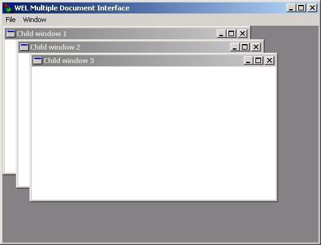

Multiple Document Interface Sample

Compiling
To compile the example:
- Launch EiffelStudio.
- Select Use existing Ace (control file) and click OK.
- Browse to Eiffel50\examples\wel\mdi\.
- Choose Ace.ace
- Choose the directory where the project will be compiled, by default the same directory containing the Ace file.
If you select another directory than the default one, please copy icons (*.ico) and resource files (*.rc) from the
default directory (the one containing the Ace file) to the new
one.
- Click OK.
Running
After launching the program, a window will be displayed as illustrated above. Selecting "New" from the "File" menu will create a new child window,
while selecting "Close" will close the currently selected child window. The options available on the "Window" menu allow positioning of the child windows.
Selecting "Exit" from the "File" menu or closing the window manually will exit the program.
Under the Hood
MAIN_WINDOW inherits WEL_MDI_FRAME_WINDOW to provide the multiple document interface
behaviour while each child window is of type WEL_MDI_CHILD_WINDOW. When "Close" is selected from the "File" menu, the feature active_window from
WEL_MDI_FRAME_WINDOW is used to select the window that must be closed.
This sample contains the following classes:
See Also
Bmpview